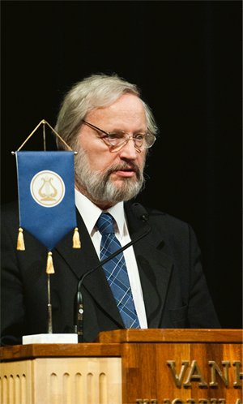

Teksti Petja Partanen Valokuva Veikko Somerpuro
“Tiede edistyy vain jos tieto on julkista”, toteaa Helsingin yliopiston kansleri Ilkka Niiniluoto.
Tieteellisen metodin tärkeä perusperiaate on avoimuus. Tiedemaailman käytännöt kaipaavat kuitenkin päivittämistä.
“Perinne monilla aloilla on, että julkaistaan tieteelliset artikkelit, mutta jätetään tutkimusdata julkaisematta”, sanoo kansleri Ilkka Niiniluoto.
Tieteen julkisuus pitäisi ulottaa johtopäätösten lisäksi myös tutkimuksessa käytettyihin aineistoihin. Yksi Niiniluodon johtaman, tutkimuksen tietoaineistojen hyödyntämistä pohtineen työryhmän suosituksista oli, että tutkimusrahoittajat palkitsisivat niitä, jotka antavat tutkimusdatansa kaikkien käyttöön.
“Mustasukkainen oman datan varjelu ei oikein ole tätä päivää.”
Esimerkkiä avoimuudesta näyttää Helsingin yliopiston professori Markku Kulmala. Ilmakehän koostumusta tutkivan huippuyksikön johtaja loi yliopistoon uuden tutkimusalan, aerosolitutkimuksen. Kulmalan johdolla rakennettu suomalainen mittausasemaverkosto jakaa havaintonsa koko maailmanlaajuisen tutkijayhteisön käyttöön.
Havaintodatan avaaminen on tuonut näkyvyyttä ja lisännyt Kulmalan tutkimusyksikön kansainvälistä painoarvoa.
“Sen ansiosta hän on maailman siteeratuin tutkija alallaan”, Niiniluoto kertoo.
Kulmala on useissa puheenvuoroissaan korostanut, että avoin tiedon jakaminen on ilmastonmuutostutkimuksen edellytys. Globaalia ongelmaa on mahdotonta tutkia ilman kansainvälistä yhteistyötä ja tutkimusdatan jakamista.
Niiniluodon työryhmä suositteli, että julkisesti rahoitetut tietoaineistot pitäisi saattaa digitaalisessa muodossa kaikkien käyttöön. Niiniluoto kertoo, että yliopiston tutkijat joutuvat usein maksamaan tutkimustyössään tarvitsemastaan raakadatasta – vaikka tieto olisikin verovaroin tuotettua. Ajattelutapa on kuitenkin muuttumassa. Trendi on kohti avointa julkista tietoa.
“Pääkaupunkiseudun kuntien HRI-hanke on kehujen arvoinen.”
Yliopistossa pohditaan kuumeisesti myös omaa tietopolitiikkaa. Tutkimusdataa syntyy valtavasti, mutta sen tallentamisesta ja julkaisemisesta ei vielä ole pelisääntöjä. Jättimäiset data-aineistot, joita syntyy vaikkapa säähavaintoasemilla tai CERNin hiukkaskiihdyttimessä, saattavat osoittautua myöhemmin arvokkaiksi aivan uusilla tutkimusaloilla.
“Emme tiedä missä ja milloin dataa tarvitaan, mutta se saattaa osoittautua tärkeäksi jonkin kysymyksen ratkaisemiseksi”, Niiniluoto pohtii.
Pitäisikö kaiken tutkimuksen raakadatan olla avoimesti saatavilla?
“Se olisi hyvä periaate, kunhan tutkimuskohteiden tietosuoja huomioidaan. Erityisesti lääketieteissä ja ihmistieteissä tarvitsemme pelisäännöt siihen, miten tutkimuksen alkuperäisaineistot tallennetaan.”
Avoimen tiedon puolestapuhujat kritisoivat usein kaupallisia tiedekustantajia, joiden kautta julkaistaan pääosa tieteellisestä tiedosta.
Open Access -liike ihmettelee nykytilannetta, jossa yliopistot rahoittavat tutkimuksen, tutkijat tarjoavat tutkimuspaperinsa ja kollegat vertaisarvioivat tulokset ilmaiseksi tieteellisille kustantajille.
“Kustantajat saavat kaiken ilmaiseksi ja myyvät tiedon takaisin yliopistoille”, Niiniluoto selvittää.
Yliopistot ostavat tutkijoilleen pääsyn tiedekustantajien sähköisiin arkistoihin, mutta tavallinen kadunmies ei pääse käsiksi uuteen tieteelliseen tietoon, ainakaan digitaalisessa muodossa. Paperilehtiä sentään pääsee selaamaan yliopiston kirjastossa.
Yliopistomaailman ulkopuolista yleisöä tavoittelevalle tutkijalle kustantajat tarjoavat mahdollisuutta ostaa oma artikkelinsa open access -muotoon eli verkossa vapaasti jaettavaksi, mutta hinta on kova.
“Esimerkiksi Elsevier-kustantamolla hinta on 3000 dollaria per artikkeli”, Niiniluoto kertoo.
Niiniluodon ratkaisu ongelmaan on niin sanottu rinnakkaistallentamisen malli. Tutkijat julkaisevat työnsä entiseen tapaan, mutta yliopistoilla olisi lisäksi omat, avoimet tutkimustietokannat, joihin julkaisut tallennetaan kaikkien saataville.
“Helsingin yliopistokin suosii tällaista ajattelutapaa.”
Tätä jarruttavat kustannussopimukset, sillä nykyiset tieteelliset kustantajat ovat ymmärrettävästi nihkeitä mallille.
•
Teoksen tekstit on lisensoitu HRI-nimeä -lisenssillä. Teoksen uudelleenkäytön yhteydessä pitää mainita sekä tekstin kirjoittaja (Petja Partanen tai Terhi Upola) että rahoittaja (Helsinki Region Infoshare -palvelu).
“Mustasukkainen oman datan varjelu ei oikein ole tätä päivää.”
Kansleri Ilkka Niiniluodon päätöksenteon ihanne perustuu tieteelliseen näyttöön.
“Tutkimustietoa pitäisi hyödyntää päätösten ja lakien valmistelussa nykyistä enemmän.”